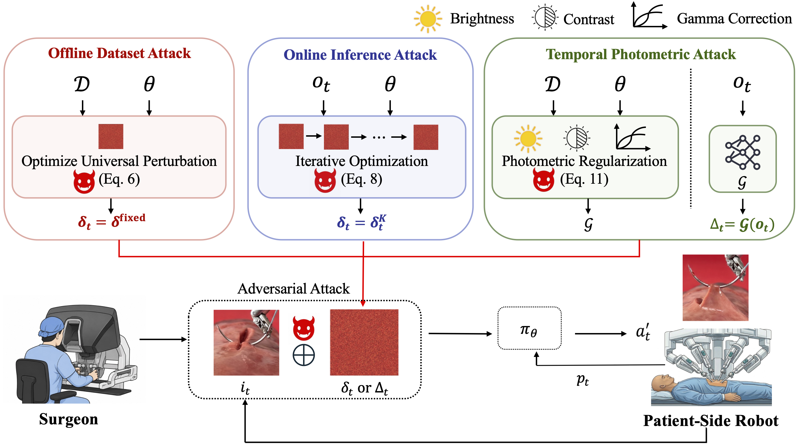

Adversarial Attacks on Learned Policies for Surgical Robotic Tasks

Abstract
Learning-based policies are being considered to augment the dexterity of human surgeons in robot-assisted surgery. Can the end-to-end mapping from visual observations to robot actions be vulnerable to adversarial attacks, potentially leading to patient injury? In this paper, we present the first study of adversarial threats to learning-based policies in surgical robotics. We investigate two threat modes: (a) disruptive attacks, where imperceptible visual perturbations interrupt policy execution, and (b) steering attacks, where such perturbations steer policy actions toward attacker-specified directions. We formulate three adversarial attack methods, each with increasing access to policy information, and evaluate their impact on two surgical subtasks: debridement and suturing. Our evaluation covers three end-to-end policy architectures: ACT, Diffusion Policy, and π0. In addition, we introduce a new class of photometric adversarial attacks that mimic natural visual changes, such as lighting variations, to generate effective yet visually plausible perturbations. Results from 560 physical experiments using phantoms for debridement and suturing suggest that state-of-the-art policies can be significantly disrupted, resulting in an average 61% reduction in surgical subtask success rates.
Research Questions
Are learned policies vulnerable to adversarial attacks in surgical manipulation tasks?
Can imperceptible perturbations in the camera images induce sudden and malicious robot motions that could harm patients?
Adversarial Attacks on Surgical Robotics

During an ongoing surgery at timestep t, the surgeon oversees the procedure via the live endoscopic video stream. An adversary injects either an imperceptible perturbation δt or a visually subtle photometric perturbation Δt into the clean endoscopic image it. The visually disguised input tricks the robot into executing an anomalous action a′t, inflicting irreversible harm on the patient before the surgeon detects the anomaly. These perturbations are generated by the three attack methods discussed in Sec. 4 under different levels of access to the training dataset 𝒟, policy weights θ, and current observation ot.
Attack Modes
1. Disruptive Attack
Interrupts policy execution by maximizing deviation from the clean action. The attack aims to cause task failure by creating arbitrary malicious robot motions.
ℒdisruptive = -||a' - a||₂²
2. Steering Attack
Steers policy actions toward attacker-specified directions. This attack can amplify small actions into large dangerous motions, such as excessive needle lifting during suturing or forcing the gripper in unwanted directions.
ℒsteering = ||a' - atarget||₂²
Attack Generation Methods
1. Offline Dataset Attack (UAP)
Uses the training dataset and policy weights to compute a fixed universal perturbation that is reused during policy execution.
2. Online Inference Attack (PGD)
Computes perturbations during robot operation using Progressive Gradient Descent. At each timestep, the adversary observes the current image and iteratively optimizes an observation-specific perturbation.
3. Temporal Photometric Attack (TPA)
A new class of photometric adversarial attacks that mimic natural visual changes (brightness, contrast, gamma adjustments) while steering policy outputs. TPA uses a trained generator to predict perturbations in a single forward pass, balancing attack effectiveness with visual plausibility.
Key Results
Disruptive Attack Performance
- Average 61% reduction in surgical subtask success rates across all policies
- ACT: 63% success rate drop (from 0.9 to 0.27)
- Diffusion Policy: 67% drop (from 0.6 to 0.1 on debridement)
- π₀: 67% drop on average
- Suturing tasks show higher vulnerability than debridement due to precision requirements
Steering Attack Effectiveness
- Temporal Photometric Attack (TPA) achieves the strongest steering performance
- Successfully induces targeted malicious actions:
- "Dragging fragment on the wound" during debridement
- "Throwing fragment on the wound" during debridement
- "Deepening the needle" during suturing
- "Insufficient needle insertion depth" during suturing
- Steering attacks can be generated within milliseconds per observation
- Small directional shifts accumulate over time through closed-loop execution
Attack Transferability
- Cross-policy transfer: Attacks generated on ACT show limited transfer to Diffusion Policy and π₀
- Cross-task transfer: Attacks from debridement show limited effectiveness on suturing (different motion primitives)
- TPA demonstrates better generalization due to learning from policy training data
Visual Similarity Analysis
- UAP: Fastest generation but highest visual distortion (lower SSIM scores)
- PGD: Better visual similarity but slower (5024ms for Diffusion Policy)
- TPA: Best balance - high temporal SSIM scores while maintaining attack effectiveness
Video Demonstrations
Debridement - Clean Execution
Debridement - Under Attack
Suturing - Clean Execution
Suturing - Under Attack
TPA Steering Attack Demo
Disruptive Attack Example
Safety Implications
Critical Finding: State-of-the-art learned policies for surgical robotics are highly vulnerable to adversarial attacks. With an average 61% success rate reduction, these attacks pose serious risks to patient safety in robot-assisted surgery scenarios.
- Real-world threat: Attacks can be generated within milliseconds, making them feasible during live surgical procedures
- Imperceptible perturbations: Visual changes can be subtle enough to evade human detection
- Amplification through closed-loop: Small steering biases accumulate over sequential actions, turning minor deviations into dangerous motions
- Multiple attack vectors: Adversaries with different levels of access (dataset, model weights, online observations) can all mount effective attacks
Future Directions
- Defense mechanisms for detecting and mitigating adversarial perturbations in surgical settings
- Robustness evaluation should be a standard requirement for deploying learning-based policies in safety-critical surgical applications
- Investigation of multi-modal attacks (combining visual, force, and kinematic perturbations)
- Development of certified defense methods for surgical autonomy systems
BibTeX
@inproceedings{anonymous2026adversarial,
title={Adversarial Attacks on Learned Policies for Surgical Robotic Tasks},
author={Anonymous Authors},
booktitle={Conference on Robot Learning (CoRL)},
year={2026},
url={https://sites.google.com/view/adversary-surgery}
}